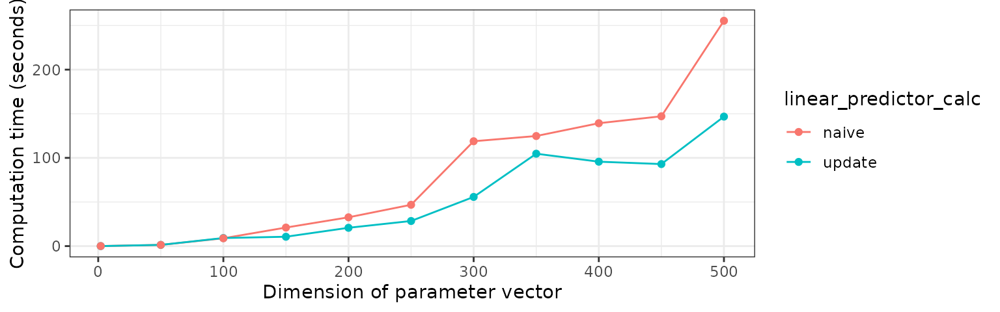

Graph of compute time as function of dimension
Using default slice function
res <- compare_eta_comptime_across_nvars(
n_vars = c(2, seq(from = 10, to = 60, by = 10)),
n_samples = 10,
burnin = 1,
w = 0.5,
parallelise = TRUE)
#> Sampling from posterior ■■■■■■■■■■■■■■■■ 50% | ETA: 1s
#> Sampling from posterior ■■■■■■■■■■■■■■■■■■■■■■■■■■■■■■■ 100% | ETA: 0s
#> Sampling from posterior ■■■■ 10% | ETA: 11s
#> Sampling from posterior ■■■■■■■■■■■■■■■■■■■■■■■■■■■■■■■ 100% | ETA: 0s
#> Sampling from posterior ■■■■ 10% | ETA: 12s
#> Sampling from posterior ■■■■■■■■■■■■■■■■■■■■■■■■■■■■■■■ 100% | ETA: 0s
#> Sampling from posterior ■■■■ 10% | ETA: 19s
#> Sampling from posterior ■■■■■■■ 20% | ETA: 11s
#> Sampling from posterior ■■■■■■■■■■■■■■■■■■■■■■■■■■■■■■■ 100% | ETA: 0s
#> Sampling from posterior ■■■■ 10% | ETA: 21s
#> Sampling from posterior ■■■■■■■■■■■■■■■■■■■■■■■■■■■■■■■ 100% | ETA: 0s
#> Sampling from posterior ■■■■ 10% | ETA: 20s
#> Sampling from posterior ■■■■■■■ 20% | ETA: 10s
#> Sampling from posterior ■■■■■■■■■■■■■■■■■■■■■■■■■■■■■■■ 100% | ETA: 0s
#> Sampling from posterior ■■■■■■■ 20% | ETA: 6s
#> Sampling from posterior ■■■■■■■■■■■■■■■■■■■■■■■■■■■■■■■ 100% | ETA: 0s
#> Sampling from posterior ■■■■ 10% | ETA: 29s
#> Sampling from posterior ■■■■■■■■■■■■■■■■■■■■■■■■■ 80% | ETA: 1s
#> Sampling from posterior ■■■■■■■■■■■■■■■■■■■■■■■■■■■■■■■ 100% | ETA: 0s
#> Sampling from posterior ■■■■■■■■■■■■■■■■■■■■■■■■■ 80% | ETA: 1s
#> Sampling from posterior ■■■■■■■■■■■■■■■■■■■■■■■■■■■■■■■ 100% | ETA: 0s
plot_eta_comptime(res, facet_by = "w")
#> Don't know how to automatically pick scale for object of type <difftime>.
#> Defaulting to continuous.
Could run over different slice widths if interested